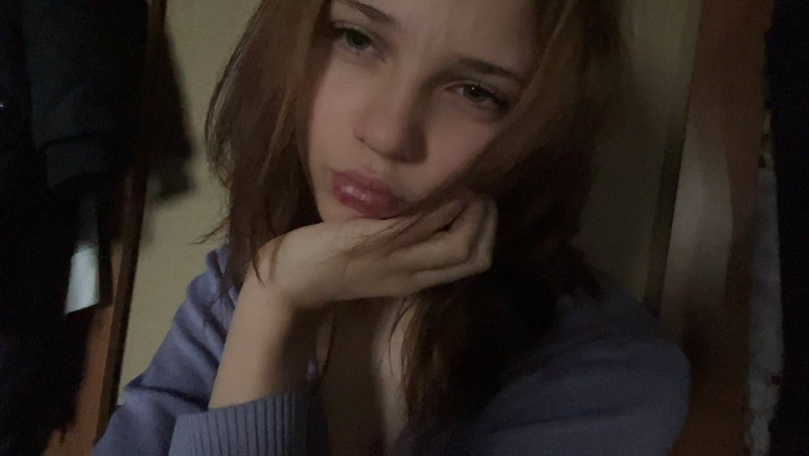
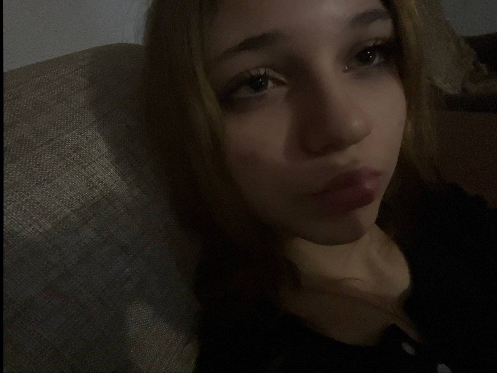
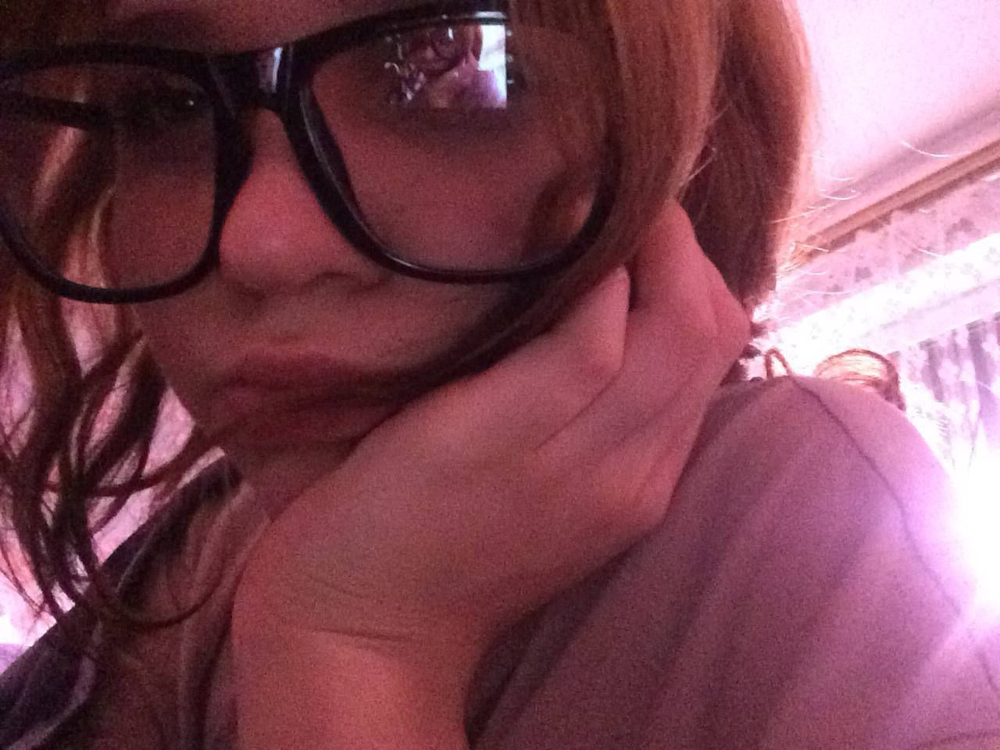
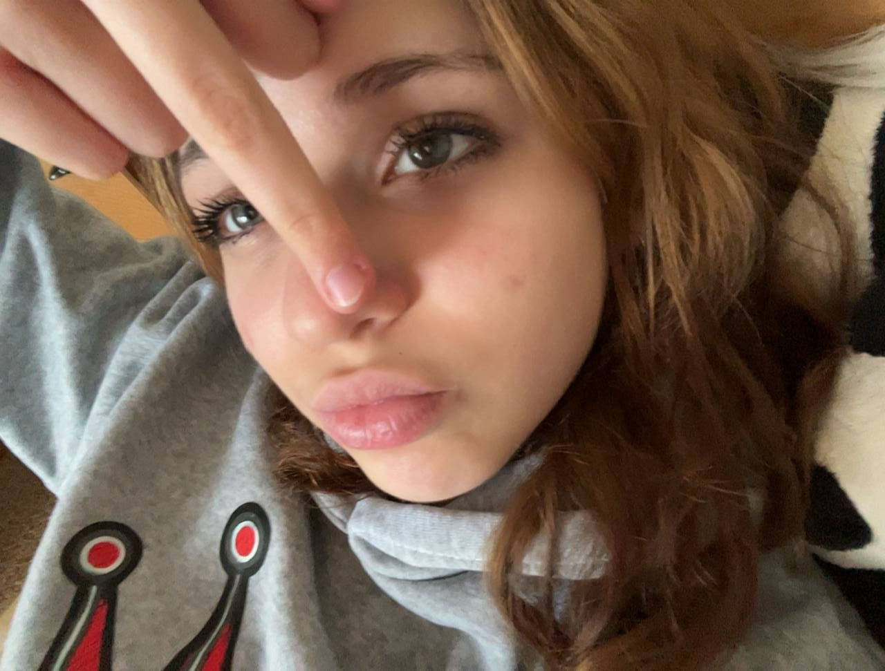
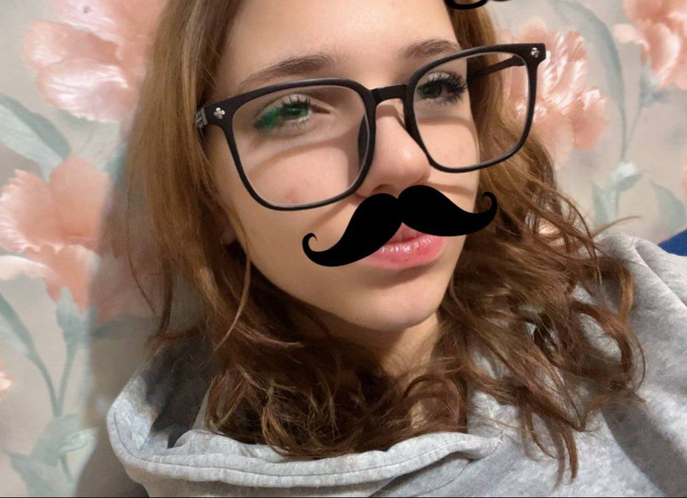

Я знаю, ты понимаешь, как мне плохо сейчас
И я почти себя убил, но ты пришла в нужный час
Ты знаешь больше обо мне, чем я сам представляю
И лишь тебя я как хорошее воспринимаю

Луна согреет и покажет нам с тобой куда плыть
Она научит нас смеяться, ненавидеть, любить
Ты хочешь быть немного лучше, но со мною никак
Прости меня, что я такой мудак
Ещё одну бессонную ночь я посвящаю тебе
Луна исчезнет во тьме, а я останусь здесь жить
Как-то надо, и я в живых оставлю себя
Лишь для того, чтоб тебя любить

Я знаю, ты понимаешь, как мне плохо сейчас
Постоянная грусть — да это жизнь для нас
Остальных я не вижу — не различаю цвета
Я перестал ненавидеть — наверное, просто устал
И, наверное, из нас двоих слабее я
Хотя меня меньше заботит вся людская хуйня
Ты хочешь быть немного лучше, но со мною никак
Прости меня, что я такой мудак

Ещё одну бессонную ночь я посвящаю тебе
Луна исчезнет во тьме, а я останусь здесь жить
Как-то надо, и я в живых оставлю себя
Лишь для того, чтоб тебя любить

Ещё одну бессонную ночь я посвящаю тебе
Луна исчезнет во тьме, а я останусь здесь жить
Как-то надо, и я в живых оставлю себя
Лишь для того, чтоб тебя любить
Ещё одну бессонную ночь я посвящаю тебе
И если хочешь покончить со мной, так давай
Всё рaвно больше нет
Ничего больше нет, что могло бы меня здесь удержать
Полиночка, я тебя очень сильно люблю, с годовщиной, я безумна рада что я с тобой год назад познакомилась, очень рада что ты есть, ты очень интересный собеседник, многогранный человек, которого очень хочется узнать ближе и понять, ты очень милая, красивая, веселая, мне очень нравится тебя слушать, когда ты говоришь о своих чувствах, о себе, доверяешься мне, я это ценю, не знаю сколько мы ещё таких годовщин встретим, но я точно не хочу чтобы это была последняя
С любовью, моей любимой Полиночке